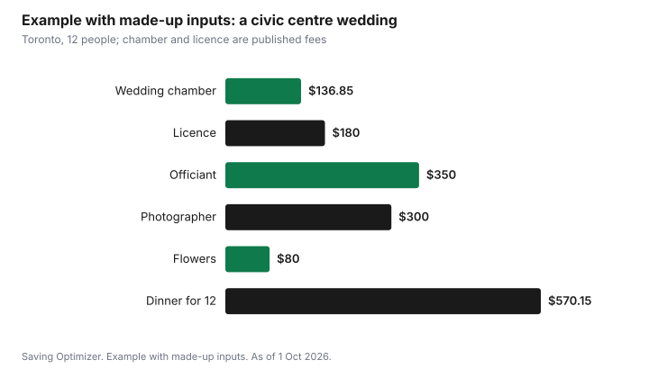

Weddings · Canada
City Hall and Courthouse Weddings in Canada: What They Cost in 2026
A civil wedding at a city hall, civic centre or courthouse in Canada can cost a few hundred dollars in total, as of 1 October 2026. In Toronto, a 30-minute booking in a civic centre wedding chamber costs $136.85 including HST, plus the $180 marriage licence and an officiant you arrange yourself. In Quebec, a court clerk or municipal officiant charges $324 plus taxes for a ceremony at the courthouse or city hall. In Manitoba, a marriage commissioner charges $50 plus expenses on top of the $100 licence. Witnesses can be friends, and photos and a small meal afterwards are the only other lines you need.
Key takeaways
- Toronto: civic centre wedding chambers cost $136.85 per 30 minutes including HST. The room only; you arrange the officiant and witnesses.
- Toronto's marriage licence is $180, not subject to HST.
- Quebec: $324 plus taxes for a civil ceremony at a courthouse or city hall; $431 plus taxes elsewhere, as 2026 maximums.
- Manitoba: $100 licence and $50 marriage commissioner fee plus reasonable expenses.
- Every civil ceremony needs two witnesses. In B.C., they must be at least 19.
- Example with made-up inputs: a Toronto civic centre wedding with a small dinner costs $1,617 for 12 people.
What a civil wedding includes
A civil wedding is a legal marriage performed by a non-religious officiant, such as a marriage commissioner, a court clerk, a municipal official or a licensed officiant, depending on the province. The legal requirements are the same as any wedding: a licence (or, in Quebec, publication), an authorized officiant, the couple and two witnesses. The setting can be a city hall room, a courthouse, a park or a home.
Costs by place
| Place | Ceremony or room | Licence | Notes |
|---|---|---|---|
| Toronto | Wedding chamber $136.85 per 30 min incl. HST (room only) | $180 | Officiant arranged separately; chambers at North York, Scarborough and York civic centres |
| Quebec | $324 plus taxes at courthouse or city hall; $431 plus taxes elsewhere | No licence (publication) | Municipalities may charge less than these maximums |
| Manitoba | Marriage commissioner $50 plus expenses | $100 | Buy the licence at least 24 hours ahead |
| British Columbia | Licensed marriage commissioner fee | $100 (includes first certificate) | Two witnesses aged 19 or older |
| Alberta | Marriage commissioner fee | $40 plus registry service fee | Same-day ceremony allowed |
Toronto: civic centre wedding chambers
The City of Toronto has three wedding chambers, at the North York, Scarborough and York civic centres. Each booking is a 30-minute block for $136.85 including HST, payable by cash, debit, credit card, certified cheque or money order, and non-refundable. Longer ceremonies need more blocks. The booking is for the room only: you must arrange a marriage officiant, two witnesses, the marriage licence and your own music (a sound system is provided). The North York chamber holds 40 people, Scarborough 22 and York 25. Confetti, open flames, food and alcohol are not allowed. Chambers are available on weekdays until 9 p.m. and on weekends and holidays until 6 p.m.
The marriage licence, $180, comes from an appointment at Toronto City Hall or North York Civic Centre. See the marriage licence guide for the steps and documents.
Quebec: courthouse and city hall
In Quebec, a court clerk of the Ministère de la Justice can perform a civil marriage at a courthouse for $324 plus taxes in 2026, or outside the courthouse for $431 plus taxes. Mayors, councillors and municipal representatives can perform ceremonies at city hall or elsewhere, collecting a fee set by municipal by-law that cannot exceed the same amounts. Fees are indexed each 1 January. A designated officiant, such as a relative or friend authorized for one ceremony, may mean no officiant fee, though the authorization process has its own steps.
Manitoba, B.C. and Alberta
In Manitoba, marriage commissioners charge $50 plus reasonable expenses, such as travel, and the licence is $100. In B.C., licensed marriage commissioners perform civil ceremonies; the licence is $100 and includes the first certificate. In Alberta, marriage commissioners perform civil ceremonies; the licence costs a $40 government fee plus the registry agent's service fee. Each province publishes lists of commissioners, and you contact them directly to book and confirm their fee.
Witnesses, photos and outfits
You need two witnesses, who can be friends or family. B.C. requires them to be at least 19. Many couples invite only witnesses and a few guests, which keeps the room and dinner small.
- Photos: a short session with a photographer for the ceremony and a walk afterwards often costs much less than full-day coverage. A friend with a good phone is free.
- Outfits: civil weddings suit outfits you can wear again. The wedding outfits guide has ideas.
- Flowers: a small bouquet or boutonnières from a grocery store or local florist.
- Rings: these can be the largest cost; see the engagement ring guide for how to compare.
A small reception
After a civil ceremony, a dinner at a restaurant, a picnic or a gathering at home replaces the big reception. Ask restaurants about private rooms and set menus, and read whether a mandatory service charge is added, because it is taxable and can add a lot. Weekday lunches are often cheaper than Saturday dinners.
Example with made-up inputs: a Toronto civic centre wedding
These numbers are an example with made-up inputs, except the Toronto chamber and licence fees, which are the City's published amounts. A couple marry with 10 guests at a Toronto civic centre and go to dinner.
| Item | Cost |
|---|---|
| Wedding chamber, one 30-minute block | $136.85 |
| Marriage licence | $180.00 |
| Officiant (made-up) | $350.00 |
| Photographer, one hour (made-up) | $300.00 |
| Flowers (made-up) | $80.00 |
| Dinner for 12 (made-up, including tax and tip) | $570.15 |
| Total | $1,617.00 |

Rings and outfits are not included. Even with them, a civil wedding can cost a small fraction of a full reception; see the 2027 wedding budget for a comparison.
Checklist
- Choose the place and confirm the room or officiant booking rules.
- Book the officiant (outside Quebec courthouses and Manitoba commissioners, often separately).
- Buy the licence within the valid window.
- Confirm two witnesses who meet the age rule.
- Book a short photo session if you want one.
- Reserve a restaurant or plan a gathering for afterwards.
| Item | Cost |
|---|---|
| Room or ceremony fee | |
| Licence | |
| Officiant | |
| Photos | |
| Flowers and outfits | |
| Meal or gathering | |
| Total |
Common mistakes
- Assuming the Toronto chamber booking includes an officiant.
- Booking a 30-minute block for a ceremony with readings and photos that needs longer.
- Bringing more guests than the room holds.
- Forgetting the licence timing rules.
- Missing the mandatory service charge at the restaurant.
Sources
- City of Toronto, Booking a Wedding Chamber at a Civic Centre (toronto.ca), as of 1 Oct 2026. $136.85 per 30 minutes including HST; room only; capacities; rules and hours.
- City of Toronto, Applying for a Marriage Licence (toronto.ca), as of 1 Oct 2026. $180, HST does not apply.
- Gouvernement du Québec, Tariff of Court Costs: Civil marriage and civil union (quebec.ca, updated 1 Jan 2026), as of 1 Oct 2026. $324 and $431 plus taxes; municipal maximums.
- Manitoba Vital Statistics, Getting Married in Manitoba, as of 1 Oct 2026. $100 licence; $50 marriage commissioner plus expenses.
- Province of British Columbia, Marriage licences (gov.bc.ca, updated 7 May 2026), as of 1 Oct 2026; Government of Alberta, Get a marriage licence, as of 1 Oct 2026.
- The officiant, photographer, flowers and dinner amounts in the example table and chart are made-up inputs.
Frequently asked questions
How much does a city hall wedding cost in Toronto?
A 30-minute booking in one of Toronto's civic centre wedding chambers costs $136.85 including HST, for the room only. Add the $180 marriage licence and the fee of an officiant you arrange yourself.
How much is a courthouse wedding in Quebec?
In 2026, a civil marriage performed by a court clerk at a courthouse costs $324 plus taxes, or $431 plus taxes outside the courthouse. Ceremonies by municipal officiants at city hall cost no more than those amounts and can cost less.
How much does a marriage commissioner cost in Manitoba?
Manitoba marriage commissioners charge $50 plus reasonable expenses such as travel. The marriage licence costs $100 and must be bought at least 24 hours before the ceremony.
How many witnesses do I need for a civil wedding?
Two. In B.C., witnesses must be at least 19 years old. Witnesses can be friends or family.
Researched and drafted with AI assistance and fact-checked against official Canadian sources. How we create content.
Disclosure: Saving Optimizer may earn a commission if a partner link is added later, such as a photographer booking or registry offer type. No partnership with any city, court or officiant is claimed on this page, and no vendor is ranked. Education only.